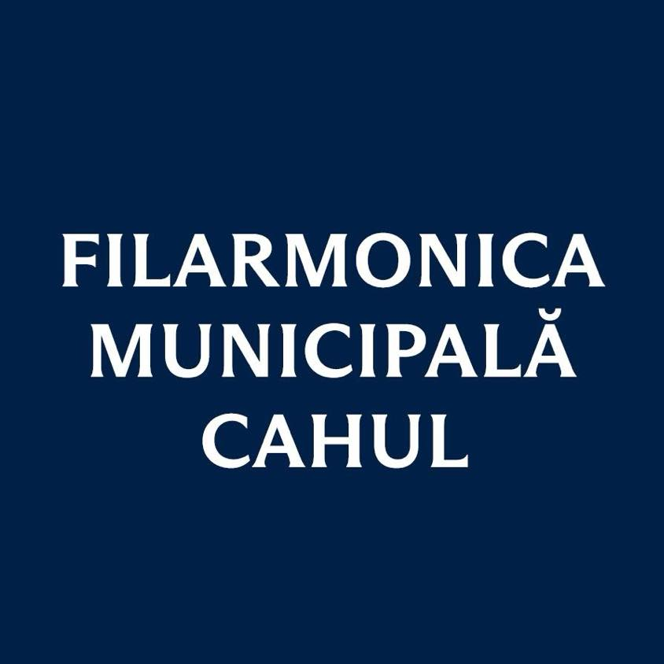

Piano
Prof. Elena Popescu
Concert pianist and professor at the Bucharest National University of Music.
Cahul, Republic of Moldova
Since 2017, Știuca Competition discovers, supports, and promotes young talents — the future generations of universal classical music — offering them an international platform for professional recognition.

The cultural heart of Cahul, nurturing musical excellence through concerts, education, and international collaborations.
Visit FilarmonicaMission
Judges and mentors from across Europe provide tailored feedback, opening doors to scholarships, concert stages, and masterclasses.
Workshops, chamber collaborations, and rehearsal residencies help competitors grow beyond the stage and into professional artistry.
Hosted in the historic Filarmonica hall, the competition brings together the city’s community, diaspora, and international guests.
Program Highlights
Category I: maximum 7 minutes.
Category II: maximum 10 minutes.
Category III: maximum 15 minutes.
Violin: H. Wieniawski — Poloneza Brillante in A major, op. 21.
Violin: W. A. Mozart — Violin Concerto No. 3 in G major, K. 216, I. Allegro.
Violoncello: Georg Goltermann — Cello Concerto No. 3 in B minor, op. 51, I.
Piano: F. Mendelssohn — Piano Concerto No. 1, op. 25, I. Molto allegro con fuoco.
Flute: Bernhard Romberg — Concerto for Flute and Orchestra in B minor, op. 30, I. Allegro maestoso.
Nai (Pan Flute): Gheorghe Zamfir — «Dansul pădurii».
Clarinet: Johann Stamitz — Concerto in B-flat major, I. Allegro moderato.
Trumpet: J. Haydn — Concerto in E-flat major, I. Allegro.
Accordion: R. Galliano — “Tango pour Claude” (4:00) / Derbenco — “Impromptu”.
Horn: W. A. Mozart — Horn Concerto No. 3, K. 447, I. Allegro moderato.
Țambal: Constantin Arvinte — “Breaza ca la Predeal”, arr. Valeriu Luță.
Date: Saturday, 2nd May.
Venue: Palace of Culture “Nicolae Botgros”, Cahul, Republic of Moldova.
08:30 - 09:00 – Participant registration.
09:00 - 10:30 - Master-class.
Date: Friday, 1st of May. Official opening of the competition.
Symphonic concert, National Radio and Television orchestra.
Date: Saturday, 2nd May, Stage I, Knockout.
Venue: Palace of Culture “Nicolae Botgros”, Cahul.
09:00 - 10:30 - Participant registration.
The fee (300 MDL) for the competition will be paid at the registration desk.
11:00-13:00 - Category 1 competition, up to and including 10 years old.
13:00-14:00 - Lunch time.
14:00 - Competition for categories 2 and 3.
Venue: Palace of Culture “Nicolae Botgros”, Cahul.
08:00 - The fee (300 MDL) for the competition will be paid at the registration desk.
09:00 - 11:00 Competition categories 1,2,3 (Continued).
Venue: Palace of Culture “Nicolae Botgros”, Cahul.
The contestants who will advance to the second round will perform one of the two pieces chosen by the jury.
14:00 - 16:00 - Competition, performance with symphony orchestra.
18:00 \"LAUREATES GALA\" - European Youth Orchestra of the Cahul Municipal Philharmonic.
The competition schedule with information regarding the venue and the order of entry into the competition will be posted on the competition's Facebook page, according to age categories.
More details regarding the order of entry into the contest will be published on 30th of April, 2026, on the contest's Facebook page.
https://www.facebook.com/groups/concursnicolaestiuca/
Jury & Mentors
Concert pianist and professor at the Bucharest National University of Music.
Principal violinist, Sofia Philharmonic, specializing in young artist mentoring.
Opera coach and international vocal competition juror.
Cahul Stage
A jewel of Moldovan culture, the hall blends classical acoustics with contemporary staging, offering a warm and resonant setting for every finalist.
Stay Connected
Email: concursnicolaestiuca@gmail.com
Deadline: April 24, 2026
Press office: +373 (0)299 2 34 56
Media kit available on request.
Instagram: @stiuca_competition
Facebook: Nicolae Știuca International Competition